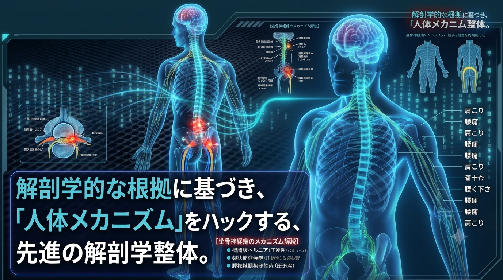

A. 正常（整った状態）
- 骨盤の水平が保たれている
- 神経への負担が少ない状態

気になる症状や身体の動きを確認しながら、施術者と一緒に状態を整理するための説明画面です。
3Dモデル：Écorché（CC BY-SA 4.0）。BodyParts3D / Z-Anatomy由来。クレジット・改変内容・ライセンス。モデルを回転・拡大し、骨格や筋肉の構造を確認できます。
部位ボタンを選ぶと、モデル内の関連する骨・筋肉を強調表示します。
モデルに神経・内臓は含まれません。部位名との対応はモデル収録構造に基づく参考表示です。3D表示は学習用で、診断や施術効果を示すものではありません。
3Dモデルはドラッグで回転、ピンチで拡大できます。下の部位ボタンから説明内容も切り替えられます。
※人体図は部位の関係を学ぶための模式図です。診断用画像ではありません。
骨盤の右側がやや上がった状態を表示しています。これは説明用のイメージです。個別の状態は施術者と確認してください。
腕を上げる動きでは、肩関節だけでなく肩甲骨や胸郭なども協調して働きます。
関連して見たい部位動きのポイント腕を上げるとき、肩甲骨は胸郭の上を動きます。肩だけに注目せず、複数の部位の動きを合わせて観察することが大切です。
これは一般的な身体のしくみの解説です。痛みの原因をこの図だけで判断することはできません。
肩・肩甲骨の構造と働きを詳しく見る ↗スライダーを動かして、説明用イメージの変化を確認できます。
骨盤の傾きや筋肉の緊張を、施術者と一緒に確認します。
骨・関節・筋肉などの構造と働きを知り、首・肩・背中・腕など、部位どうしが連携して動くしくみを見ていきましょう。
部位を選ぶと、関連する部位や動きのポイントが表示されます。詳しい構造と機能の解説は、肩・肩甲骨、肘・手、腰・骨盤からご覧いただけます。
構造・働き・首や背中、腕とのつながり
構造と機能の解説を見る ↗ 03 / NECK頭を支え、胸郭や肩と協調する部位
人体図で位置を見る ↗ 04 / CHEST & BACK胸郭、背骨、肩甲骨の動き
人体図で位置を見る ↗ 05 / LOW BACK & PELVIS体幹と股関節をつなぐ動き
構造と機能の解説を見る ↗ 06 / HIP立つ、歩く、座る動作に関わる関節
人体図で位置を見る ↗ 07 / KNEE股関節と足首の間で脚の動きを支える
人体図で位置を見る ↗ 08 / FOOT接地や歩行に関わる足部の働き
人体図で位置を見る ↗頭部の構造や首とのつながりを解説予定
記事を準備中肘・前腕・手指の構造と、肩から続く動き
構造と機能の解説を見る ↗股関節や膝と連動する太ももの働きを解説予定
記事を準備中足首や歩行との関係を解説予定
記事を準備中このコーナーは一般的な身体の構造と機能を紹介するものです。症状の原因を判断したり、診断したりするものではありません。